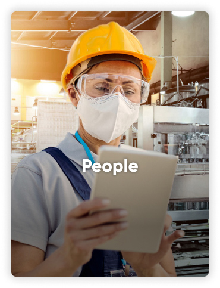
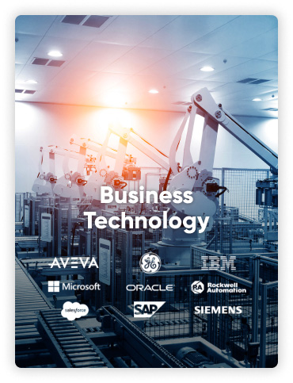
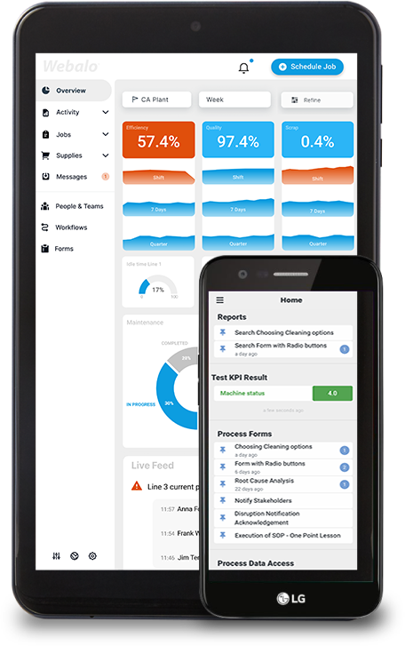

Empower your workforce Optimize your enterprise
Webalo The Platform for the Frontline Workforce
Empower the Workforce
Create a quality-driven workplace.
Monitor events, engage the workforce, automate activities. Work across platforms, across the buisness


Webalo is recognised for its
iron-clad value proposition, all-inclusive platform with best-in-class features, close relationships with customers and the market, and a strong overall position in the global connected frontline workforce platforms for the industrial and energy industry
Optimize Your Enterprise
- Ensure rapid, effective event response
- Standardize and automate operational processes
- Communicate effectively across all teams
- Visualize process performance and automate process improvement
READ NEW REPORT
Webalo enables you to rapidly respond to events, digitally engage the workforce, and automate activities across all business areas.

Empower an agile workforce that can respond to and resolve events in real-time
Visualize plant operations in real-time
Empower the workforce with actionable data
Providing the frontline workforce with real-time insight into operations allows rapid and effective responses to all events.